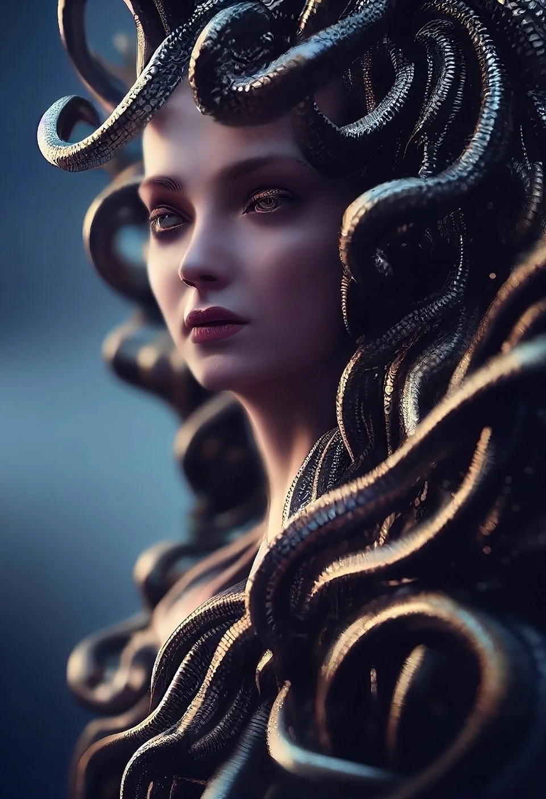
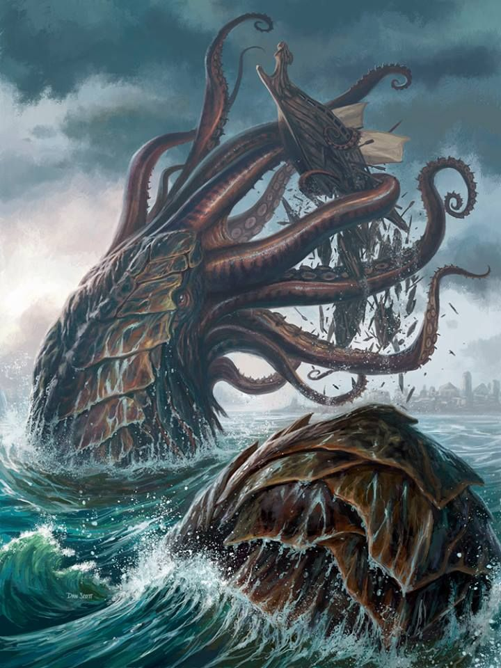
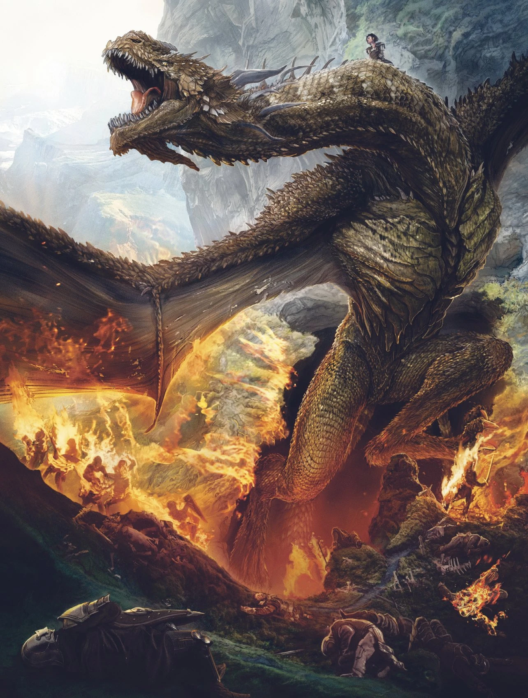

Monstruos de esta Temporada
MedusaUn clásico de la mitología griega, Medusa convertía en piedra a todo aquel que osaba mirarle fijamente a los ojos. Con serpientes en su cabeza, este monstruo fue decapitado por Perseo, el héroe que luego usaría su cabeza como arma hasta que se la entregó a Atenea para ponerla en su escudo. Era una de las tres hermanas Gorgona y la única que no poseía el don de la inmortalidad según la mitología. Es probablemente uno de monstruos más famosos de la Antigua Grecia y ha servido como fuente de inspiración a artistas de la talla de Rubens o Caravaggio, quien pintaría "La cabeza de Medusa", la obra que se encuentra sobre estas líneas. 
|
El Kraken
Esta criatura monstruosa de las sagas nórdicas habitaba las profundidades marinas al acecho de los marineros que osaban acercarse por sus territorios. En la saga islandesa de Örvar-Oddr se asegura que se trataba del monstruo más grande del mar, capaz de engullir hombres, barcos e incluso ballenas.

|
Dragones
La existencia de estas tremendas bestias escupe fuego siempre ha sido fruto de las fantasías, los mitos y las leyendas, pero el imaginario colectivo ha abrazado de buen agrado a lo largo de toda la historia la figura de los dragones. Animales alados, tremendamente poderosos, con garras como espadas y con una inusitada querencia por la destrucción, los dragones están presentes en muchas de las mitologías del mundo, llegando a ser criaturas especialmente importantes en países de Asia oriental.
|
El Monstruo de la semana es:

|
Jack el Destripador
Cinco prostitutas perdieron la vida tras ser asesinadas en el East End de Londres en 1888 y nunca se supo la identidad de su agresor. En Whitechapel, la parte de Londres que la propia ciudad no quería ver, Jack el Destripador se convirtió en uno de los asesinos en serie más famosos y crueles de la historia. Nunca se supo su identidad, la policía removió la ciudad para tratar de dar con él y, mientras tanto, el criminal siguió campando a sus anchas mientras burlaba a las fuerzas del orden en las calles más pobres del Londres victoriano.
|